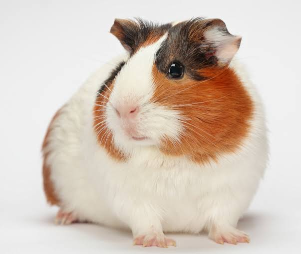

Guinea pig
The guinea pig or domestic guinea pig (Cavia porcellus), also known as the cavy or domestic cavy (/ˈkeɪvi/ KAY-vee), is a species of rodent belonging to the genus Cavia, family Caviidae. Breeders tend to use the name "cavy" for the animal, but "guinea pig" is more commonly used in scientific and laboratory contexts. Despite their name, guinea pigs are not native to Guinea, nor are they closely related to pigs. Instead, they originated in the Andes region of South America, where wild guinea pigs can still be found today. Studies based on biochemistry and DNA hybridization suggest they are domesticated animals that do not exist naturally in the wild, but are descendants of a closely related cavy species such as C. tschudii. Originally, they were domesticated as livestock (source of meat) in the Andean region and are still consumed in some parts of the world. In Western society, the guinea pig has enjoyed widespread popularity as a pet since its introduction to Europe and North America by European traders in the 16th century. Their docile nature, friendly responsiveness to handling and feeding, and the relative ease of caring for them have continued to make guinea pigs a popular choice of household pets. Consequently, organizations devoted to the competitive breeding of guinea pigs have been formed worldwide. Through artificial selection, many specialized breeds with varying coat colors and textures have been selected by breeders. Livestock breeds of guinea pig play an important role in folk culture for many indigenous Andean peoples, especially as a food source. They are not only used in folk medicine and in community religious ceremonies but also raised for their meat. Guinea pigs are an important culinary staple in the Andes Mountains, where it is known as cuy. Lately, marketers tried to increase their consumption outside South America. Biological experimentation on domestic guinea pigs has been carried out since the 17th century. The animals were used so frequently as model organisms in the 19th and 20th centuries that the epithet guinea pig came into use to describe a human test subject. Since that time, they have mainly been replaced by other rodents, such as mice and rats. However, they are still used in research, primarily as models to study such human medical conditions as juvenile diabetes, tuberculosis, scurvy (like humans, they require dietary intake of vitamin C), and pregnancy complications.
History
Cavia porcellus is not found naturally in the wild; it is likely descended from closely related species of cavies, such as C. aperea, C. fulgida, and C. tschudii. These closely related species are still commonly found in various regions of South America. Studies from 2007 to 2010 applying molecular markers, and morphometric studies on the skull and skeletal morphology of current and mummified animals revealed the ancestor to be most likely C. tschudii. Some species of cavy, identified in the 20th century as C. anolaimae and C. guianae, may be domestic guinea pigs that have become feral by reintroduction into the wild. Regionally known as cuy (Spanish word derived from quechua quwi), the guinea pig was first domesticated as early as 5000 BC for food by tribes in the Andean region of South America (the present-day southern part of Colombia, Ecuador, Peru, and Bolivia), some thousands years after the domestication of the South American camelids. The Moche people of ancient Peru worshipped animals and often depicted the guinea pig in their art. Early accounts from Spanish settlers state that guinea pigs were the preferred sacrificial animal of the Inca people native to Peru. These claims are supported by archaeological digs and transcribed Quechua mythology, providing evidence that sacrificial rituals involving guinea pigs served many purposes in society such as appeasing the gods, accompanying the dead, or reading the future. From about 1200 to the Spanish conquest in 1532, the indigenous people used selective breeding to develop many varieties of domestic guinea pigs, forming the basis for some modern domestic breeds. They continue to be a food source in the region; many households in the Andean highlands raise the animal.